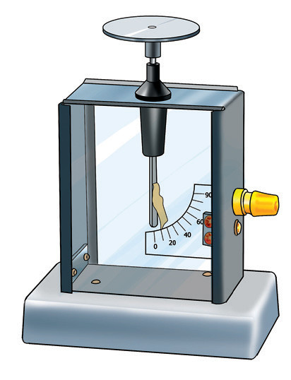
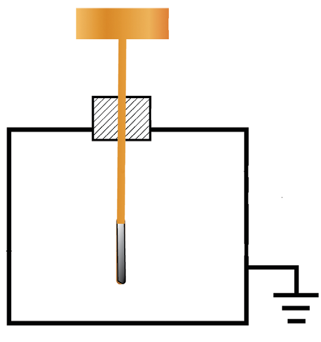

If the charging object (comb or glass rod) is removed, the charges in the iron nail return to their normal distribution and the nail is no longer charged.
Detection of charges
Electroscopes detect the presence of electric charges on a body. The most commonly used type of this instrument is the leaf electroscope.
Structure of a leaf electroscope
A leaf electroscope was previously referred to as a gold leaf electroscope. It is an instrument used to detect electric charge on an object. It consists of a metal cap mounted on a metal rod, having at its lower end a small metal plate with a thin metal leaf attached to it. The metal used for the cap, rod and plate is normally brass. The leaf is normally made up of gold, but any other metal, like aluminium, can be used. The metal rod and plate with attached metal leaf are enclosed in a metal or glass case to protect the leaf from air currents. Figure 1.17 (a) shows an example of a leaf electroscope, and Figure 1.17 (b) is its schematic diagram.


Construction of a gold-leaf electroscope
The construction includes a metal rod with a conductive ball at the top and two thin gold leaves suspended from the bottom, which visibly respond to changes in charge. Enclosed in a protective casing, the electroscope is an essential tool in electrostatics, enabling clear observation of electrostatic phenomena.